Objetos
Todo lo que llevás abajo
Armas, armadura, munición, luz, drones y el resto de tu equipo, con números reales de la versión actual.
Tu equipo
Diez ranuras que llenás desde el inventario (I). Tu clase nunca bloquea equipo: sólo los requisitos de nivel, atributo y habilidad. Civilización + Arma + Armadura + Batería + Luz = Build.
- Cabeza
- Torso
- Piernas
- Botas
- Arma principal
- Mano secundaria
- Herramienta
- Mochila
- Batería
- Luz
Tocá o hacé clic en una columna para ordenar. Las tablas anchas se desplazan de costado.
16 objetos
Armas
Cualquier clase puede llevar cualquier arma; la clase define cuánto pega y qué tan rápido la entrena. Golpe y DPS son de la clase natural del arma (la que entrena su habilidad más rápido) con habilidad 1 y nivel 1, en régimen, con su propia munición. Abrí un arma para ver todas las clases, o probá la calculadora de abajo.
Cómo se calculan los números
golpe = base × coeficiente de clase × bono de atributo × bono de habilidad y nivel × munición × (1 + rasgo %)
Apertura es el primer golpe; régimen es el estado estable (Calor y Supresión al máximo, Alcance a 6 m o más, Sobrecarga con la celda sobre la mitad). La Emboscada cuenta en la mitad de los golpes; La Deriva suma Trailblazer +8% al mismo blanco; el veneno de esporas se suma por segundo. Aplastar sólo aplica a élites y jefes, así que no entra en el DPS.
Toda arma entrena su habilidad al mismo ritmo por segundo de pelea: 10 XP/s × afinidad de clase. Desde el rango 2 también piden tu habilidad: T2 10, T3 20, T4 35, T5 50, T6 70.
- HojasEspadas, hachas y motosierras. Calor: los golpes encadenados dentro de 3 s hacen +5 / +10 / +15% de daño (una motosierra en marcha arranca en +15%).
- ContundenteMartillos y mazas. Desestabilizar: un golpe retrasa el próximo ataque del enemigo. Aplastar: daño extra contra élites y jefes.
- Hojas cortasCuchillos y dagas. Emboscada: +30% de daño si te moviste 2 m desde tu último golpe; remates a humanoides heridos.
- Armas de fuegoEscopetas, carabinas y rifles. Supresión: cada golpe seguido al mismo blanco dentro de 2 s suma +5% de daño, hasta +15%.
- PrecisiónRifles de precisión. +15% de daño a blancos a 6 m o más. Más adelante: puntos débiles.
- EsporasProyectores de esporas. Los cartuchos de esporas envenenan lo que tocan; con uno en la mano, Bloom envenena en vez de curar.
- VitalismoArmas vivas que disparan dardos sinápticos: hieren enemigos y curan a los operadores que tocan. Más adelante: curación más fuerte.
- TecnologíaArmas de energía y electrónica de campo. Cada disparo gasta de la celda equipada. Sobrecarga: +15% de daño mientras la celda está por encima de la mitad.
| Arma | Habilidad | Manos | Daño | Intervalo (s) | Alcance (m) | Golpe · apertura / régimen | DPS · clase natural | Consume | Rasgo y especiales | Rango · requiere | Peso (kg) | Dónde conseguirla |
|---|---|---|---|---|---|---|---|---|---|---|---|---|
| Hojasclase natural: FOUNDRY | ||||||||||||
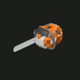 Timber Saw | Hojas | 2H | 12 | 0,6 | 2,5 | 16 / 16 | 26,7 | Gas Can 0,2 L de combustible por corte | Acelerada: Calor completo +15% desde el primer corte | T1 · Nv 1 | 7 | Rask 210 Metal |
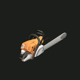 Headsman Saw | Hojas | 2H | 23 | 1,2 | 2,9 | 30 / 30 | 25,0 | Gas Can 0,5 L de combustible por corte | Acelerada: Calor completo +15% desde el primer corte | T1 · Nv 1 | 9 | Rask 250 Metal, Castoff Vanguard 4% |
| Hojas | 1H | 12 | 0,7 | 2,4 | 14 / 16 | 22,9 | — | Calor +5 / 10 / 15% en golpes encadenados | T1 · Nv 1 | 2,5 | Rask 120 Metal | |
| Hojas | 1H | 17 | 1 | 2,4 | 20 / 22 | 22,0 | — | Calor +5 / 10 / 15% en golpes encadenados | T1 · Nv 1 | 4 | Rask 150 Metal, Gear Crate inicio | |
| Hojas | 1H | 10 | 0,6 | 2,2 | 13 / 13 | 21,7 | Gas Can 0,1 L de combustible por corte | Acelerada: Calor completo +15% desde el primer corte | T1 · Nv 1 | 4,5 | Rask 100 Metal, Odo Ferrant 110 Metal, Castoff Raider 3% | |
| Contundenteclase natural: FOUNDRY | ||||||||||||
| Contundente | 2H | 28 | 1,4 | 2,6 | 32 / 32 | 22,9 | — | Desestabiliza 0,45 s · Aplasta +20% contra élites y jefes | T1 · Nv 1 | 7 | Rask 170 Metal, Gear Crate inicio | |
| Contundente | 1H | 17 | 0,95 | 2,3 | 19 / 19 | 20,0 | — | Desestabiliza 0,3 s · Aplasta +10% contra élites y jefes | T1 · Nv 1 | 3,5 | Rask 130 Metal | |
| Hojas cortasclase natural: RELAY | ||||||||||||
| Hojas cortas | 2H | 7 | 0,4 | 1,7 | 10 / 10 | 22,5 | — | Emboscada +30% tras moverte 2 m · remata humanoides heridos | T1 · Nv 1 | 1,6 | Rask 160 Metal | |
| Hojas cortas | 1H | 8 | 0,5 | 1,8 | 12 / 12 | 21,0 | — | Emboscada +30% tras moverte 2 m · remata humanoides heridos | T1 · Nv 1 | 1 | Rask 110 Metal, Gear Crate inicio | |
| Armas de fuegoclase natural: DRIFT | ||||||||||||
| Armas de fuego | 2H | 11 | 0,6 | 10 | 16 / 19 | 31,7 | Field Round | Supresión +5% por golpe al mismo blanco, hasta +15% | T1 · Nv 1 | 4 | Rask 180 Metal | |
| Armas de fuego | 1H | 16 | 1 | 9 | 24 / 28 | 28,0 | Field Round | Supresión +5% por golpe al mismo blanco, hasta +15% | T1 · Nv 1 | 4 | Rask 140 Metal | |
| Armas de fuego | 1H | 16 | 1,1 | 7 | 24 / 28 | 25,5 | Field Round | Supresión +5% por golpe al mismo blanco, hasta +15% · también pega a 2 más en un cono de 30° al 60% | T1 · Nv 1 | 3 | Rask 200 Metal, Gear Crate inicio | |
| Precisiónclase natural: DRIFT | ||||||||||||
| Precisión | 2H | 28 | 1,75 | 14 | 46 / 49 | 28,0 | Field Round | +15% a 6 m o más | T1 · Nv 1 | 5 | Rask 220 Metal, Gear Crate inicio | |
| Esporasclase natural: VERDANT | ||||||||||||
| Esporas | 1H | 13 | 0,9 | 6 | 10 / 10 | 14,1 | Spore Cartridge | veneno 3/s | T1 · Nv 1 | 2,5 | Rask 190 Metal, Gear Crate inicio | |
| Vitalismoclase natural: VERDANT | ||||||||||||
| Vitalismo | 2H | 16 | 1 | 9 | 16 / 16 | 16,0 | Synapse Dart | cura aliados 8 | T1 · Nv 1 | 3,5 | Rask 200 Metal, Gear Crate inicio | |
| Tecnologíaclase natural: RELAY | ||||||||||||
| Tecnología | 2H | 14 | 0,8 | 8 | 17 / 17 | 21,2 | 1,5 de energía por disparo | Sobrecarga +15% con la celda por encima del 50% | T1 · Nv 1 | 3 | Rask 210 Metal, Gear Crate inicio | |
1 objetos
Escudos
El equipo de mano secundaria combina con cualquier arma de una mano. Recibir golpes con el escudo en alto entrena Escudos: 8% menos daño, hasta 40%.
| Nombre | Ranura | Armadura | Resistencia | Rango · requiere | Peso (kg) | Dónde conseguirlo |
|---|---|---|---|---|---|---|
| Mano secundaria | +8 | +2 | T1 · Nv 1 | 4 | Rask 150 Metal |
15 objetos
Armadura
Cabeza, torso, piernas y botas se equipan por separado. La armadura reduce el daño físico; la resistencia, todo lo demás: reducción = valor ÷ (valor + 100), como máximo 75%.
| Nombre | Ranura | Armadura | Resistencia | Rango · requiere | Peso (kg) | Dónde conseguirlo |
|---|---|---|---|---|---|---|
| Cabeza | ||||||
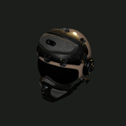 Pilot's Helmet | Cabeza | +7 | +3 | T2 · Nv 8 | 2,4 | Warlord's Strongbox |
| Cabeza | +4 | +1 | T1 · Nv 1 | 2 | Supply Crate | |
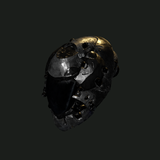 Pressure HelmPróximamente | Cabeza | +15 | +5 | T4 · Nv 35 | 3,2 | — |
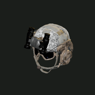 Tactical HelmetPróximamente | Cabeza | +13 | +6 | T4 · Nv 35 | 2,6 | — |
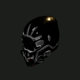 Furnace HelmPróximamente | Cabeza | +12 | +3 | T3 · Nv 20 | 3 | — |
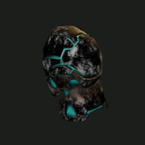 Nightwire HelmPróximamente | Cabeza | +12 | +7 | T4 · Nv 35 | 2,4 | — |
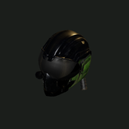 Vulture HelmPróximamente | Cabeza | +12 | +8 | T4 · Nv 35 | 2,6 | — |
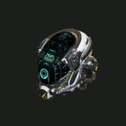 Pathfinder VisorPróximamente | Cabeza | +10 | +4 | T3 · Nv 20 | 2,4 | — |
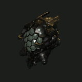 Hornet HelmetPróximamente | Cabeza | +9 | +6 | T3 · Nv 20 | 2,3 | — |
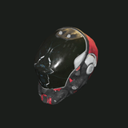 Signal HelmPróximamente | Cabeza | +9 | +5 | T3 · Nv 20 | 2,1 | — |
| Cabeza | +5 | +2 | T1 · Nv 1 | 2,2 | — | |
| Torso | ||||||
| Torso | +6 | +1 | T1 · Nv 1 | 3 | Supply Crate | |
| Piernas | ||||||
| Piernas | +4 | +1 | T1 · Nv 1 | 2 | Supply Crate | |
| Botas | ||||||
| Botas | +2 | +0 | T1 · Nv 1 | 1,5 | Supply Crate | |
| Botas | +3 | +0 | T1 · Nv 1 | 4 | — | |
6 objetos
Munición
Un arma a distancia dispara cualquier munición de su familia, la primera pila de tu inventario. Las balas alimentan rifles y escopetas, los cartuchos de esporas envenenan y los dardos sinápticos hieren enemigos y curan operadores. Las armas de Tecnología gastan energía de la celda equipada, y las motosierras queman combustible de un bidón.
| Nombre | Familia | Daño | Efecto | La disparan | Pila | Peso (kg) | Dónde conseguirlo |
|---|---|---|---|---|---|---|---|
| Balas | ×1 | sólo daño | Longshot, Frontier Shotgun, Scout Rifle, Rivet Caster | 100 | 0,02 | Casso 3 Metal, Mama Zuri 4 Metal, Gear Crate +11 | |
| Balas | ×1,25 | sólo daño | Longshot, Frontier Shotgun, Scout Rifle, Rivet Caster | 100 | 0,025 | Casso 6 Metal, The Warlord 80%, Castoff Trooper 35% +4 | |
| Esporas | ×0,8 | envenena 3/s durante 4 s (12 en total) | Spore Projector | 100 | 0,03 | Vesko 4 Metal, Sluice Maw 30% | |
| Esporas | ×0,9 | envenena 4/s durante 6 s (24 en total) | Spore Projector | 100 | 0,035 | Vesko 9 Metal | |
| Sinapsis | ×1 | cura 8 a un aliado | Synapse Carbine | 100 | 0,02 | Vesko 5 Metal | |
| Sinapsis | ×1 | cura 12 a un aliado; al pegarle a un enemigo cura 6 a cada operador a 6 m tuyo (a vos también) | Synapse Carbine | 100 | 0,025 | Vesko 11 Metal |
4 objetos
Luces
Tu luz es la diferencia entre leer una caverna y adivinarla. Las luces más potentes vacían la batería más rápido; T prende y apaga la linterna.
| Nombre | Radio de luz (m) | Consumo | Duración con Battery Cell I | Rango · requiere | Peso (kg) | Dónde conseguirlo |
|---|---|---|---|---|---|---|
| 9 | 0,15/s | ≈ 11,1 min | T1 · Nv 1 | 1 | Sam 60 Metal, Gear Crate | |
| 10,5 | 0,18/s | ≈ 9,3 min | T2 · Nv 8 | 1,2 | Sam 180 Metal | |
| 12 | 0,22/s | ≈ 7,6 min | T2 · Nv 8 | 1,6 | Sam 260 Metal | |
| 14 | 0,3/s | ≈ 5,6 min | T2 · Nv 8 | 1,8 | — |
7 objetos
Drones
Se lanzan desde el inventario: una lámpara, un arma, un explorador que pilotás o una bomba que volás. Sacan energía de tu batería mientras vuelan.
| Nombre | Función | Tecnología | Consumo | Vuelo | Datos | Peso (kg) | Dónde conseguirlo |
|---|---|---|---|---|---|---|---|
| Luz | — | 0,25 E/s | 3:00 | lámpara 10 m | 0,9 | Rask 300 Metal | |
| Asalto | 3 | 0,6 E/s | 0:45 | 6 de daño (máx. 9) cada 1,4 s, 9 m | 2,4 | Rask 3 500 Metal | |
| Escaneo (pilotado) | 3 | 0,45 E/s | 2:00 | 8 m/s, 40 m de alcance, radar 24 m | 1,5 | Rask 1 400 Metal | |
| Escaneo (pilotado) | 2 | 0,5 E/s | 1:30 | 5 m/s, 30 m de alcance, radar 18 m | 3,6 | Rask 900 Metal | |
| Escaneo (pilotado) | 5 | 0,55 E/s | 2:30 | 7,5 m/s, 45 m de alcance, radar 28 m | 1 | Rask 2 200 Metal | |
| Ataque (pilotado, se gasta) | — | 0,8 E/s | 0:40 | 11 m/s, 45 m de alcance, explosión 3,5 m, 45 (máx. 50) | 1,2 | Rask 1 200 Metal | |
| Ataque (pilotado, se gasta) | — | 1 E/s | 0:45 | 12 m/s, 55 m de alcance, explosión 4,5 m, 75 (máx. 80) | 1,8 | Rask 2 400 Metal |
2 objetos
Baterías y mochilas
La batería alimenta tu luz, tus drones, las armas de energía y tus poderes. Las celdas de repuesto la recargan entre peleas; Vesko recarga una vacía. Una mochila suma celdas y carga, y se queda con lo que tiene si la soltás.
| Nombre | Ranura | Capacidad | Carga | Peso (kg) | Dónde conseguirlo |
|---|---|---|---|---|---|
| Mochila | 20 celdas | +15 kg | 1,5 | Sam 150 Metal, Supply Crate | |
| Batería | 100 energía | — | 1 | Pell 250 Metal, Gear Crate, The Warlord 30% +7 |
2 objetos
Herramientas y combustible
El taladro va en la ranura de herramienta: mantené F en un punto de perforación. Los bidones se llenan en los surtidores y alimentan motos, la grúa y las motosierras de La Forja.
| Nombre | Ranura | Uso | Peso (kg) | Dónde conseguirlo |
|---|---|---|---|---|
| Herramienta | Potencia ×1 | 6 | Gear Crate | |
| Inventario | 20 L de combustible | 4 | Rask 30 Metal, Odo Ferrant 32 Metal |
2 objetos
Consumibles y comida
Las cápsulas curan al instante; la comida cura con el tiempo. Las dos se apilan en el inventario.
| Nombre | Cura | Cómo | Pila | Peso (kg) | Dónde conseguirlo |
|---|---|---|---|---|---|
| +40 PV | al instante · 5 s de espera | 10 | 0,2 | Pell 25 Metal, Gear Crate, Switchyard Cache +26 | |
| +60 PV | en 20 s | 10 | 0,25 | Auntie Rhea 6 Metal |
7 objetos
Cajones y estuches
Tu primer equipo sale de cajones personales en el Outpost; los Document Cases guardan registros y los cofres de jefes se abren una vez por operador.
| Nombre | Capacidad | Tipo | Dónde |
|---|---|---|---|
| 2 celdas | Fijo en su lugar | The Scarp, The Deep Survey · Floor 3, zone.c3_site_upper | |
| 9 celdas | Fijo en su lugar | The Outpost | |
| 12 celdas | Se puede llevar | — | |
| 8 celdas | Fijo en su lugar | The Outpost | |
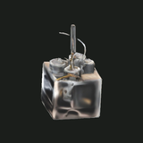 Switchyard Cache | 4 celdas | Fijo en su lugar | The Pump Works · Switchyard |
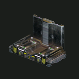 VDI Strata Cache | 8 celdas | Fijo en su lugar | zone.c3_site_rig |
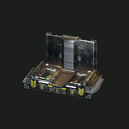 Warlord's Strongbox | 4 celdas | Fijo en su lugar | Castoff Hideout · Floor 4 |
11 objetos
Recursos y chatarra
Mineral, cristal, chatarra y moneda: lo que excavás, encontrás y llevás a casa. Todo lo que acarreás pesa algo.
| Nombre | Tipo | Valor / nota | Peso (kg) | Dónde conseguirlo |
|---|---|---|---|---|
| Moneda | 1 Metal | 0,01 | Brine Scorpion 100%, Crawler 100%, Pit Wyrm 100% +25 | |
| Moneda | 100 Metal | 0,01 | — | |
| Moneda | 10 000 Metal | 0,02 | — | |
| Minerales | — | — | The Outpost, The Shallows, The Scarp +7 | |
| Minerales | — | — | The Deep Survey, The Saltpan, The Salt Pit +8 | |
| Minerales | — | — | The Outpost, The Shallows, The Deep Survey +10 | |
| Cristales | — | — | The Shallows, The Deep Survey, zone.c3_site_lower +8 | |
| Chatarra y hallazgos | — | — | The Shallows, The Deep Survey · Floor 2, The Deep Survey | |
| Chatarra y hallazgos | — | — | The Saltpan, The Deep Survey · Floor 3, Excavation C-3 +7 | |
| Chatarra y hallazgos | — | — | The Saltpan, Frontier Road, Floodlands +46 | |
| Servo Core | Componentes | — | 1,2 | Odo Ferrant 45 Metal, Switchyard Cache, Chopper 100% +6 |
9 objetos
Registros, contratos y servicios
Tablets para leer, drives de contratos para cobrar y el servicio de excavación de VDI.
| Nombre | Tipo | Valor / nota | Peso (kg) | Dónde conseguirlo |
|---|---|---|---|---|
| Registros | WHAT WE TOOK · WHAT IT COST | 0,3 | — | |
| VDI Bore Report · Bore 1 | Registros | VANTAGE DEEP INDUSTRIES · CONTRACT SITE 3 · BORE 1 · REPORT 412 | 0,3 | — |
| Registros | VANTAGE DEEP INDUSTRIES — INTERNAL · CLASSIFIED | 0,3 | — | |
| Registros | VANTAGE DEEP INDUSTRIES · SHAFT 3 · SHIFT LOG | 0,3 | — | |
| VDI Shift Roster · Shift Camp 3 | Registros | VANTAGE DEEP INDUSTRIES · CONTRACT SITE 3 · SHIFT CAMP 3 · ROSTER | 0,3 | — |
| VDI Telemetry · Pump Works 7 | Registros | VANTAGE DEEP INDUSTRIES — PUMP WORKS 7 · AUTOMATED TELEMETRY | 0,3 | Switchyard Cache |
| Registros | STANDING ORDERS · THE HIDEOUT | 0,3 | Warlord's Strongbox | |
| Contratos | 800 Metal | 0,02 | — | |
| Servicios | — | 0,6 | VDI Field Unit 10 000 Metal |
Herramienta
Calculadora de daño
Elegí una clase, un arma y tu entrenamiento. Los números usan las mismas fórmulas que el servidor del juego.